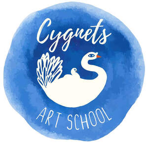

Trade Mark Journal No.2025/034 22 August 2025
UK00004246811 8 August 2025 (9,16,35,41)

- Class 9
- Downloadable digital educational content; downloadable instructional materials in the field of art; mobile applications relating to art education; downloadable video and audio content for art tuition; computer software for educational purposes; downloadable templates, worksheets and teaching resources.
- Class 16
- Printed teaching materials; educational books and manuals; art instruction workbooks; sketchbooks; printed lesson plans and guides; printed marketing materials; posters, leaflets, and printed signage; certificates and awards for students.
- Class 35
- Business management of art schools; franchising services, namely assistance in the establishment, operation, and management of franchised businesses; marketing support services; consultancy and advisory services relating to business operations in the field of art education; promotion of art courses and educational services through online and offline channels.
- Class 41
- Educational and training services; provision of instruction and tuition in fine art and creative subjects; operation of art schools, holiday camps and extracurricular clubs; organisation and delivery of art classes, workshops, events, parties and exhibitions; publication of educational materials; provision of non-downloadable videos and digital learning content; educational services provided via the internet or online platforms; franchise services in the field of art education and training; advisory services relating to art tuition, school operations, and curriculum development.
Cygnets Art School Ltd